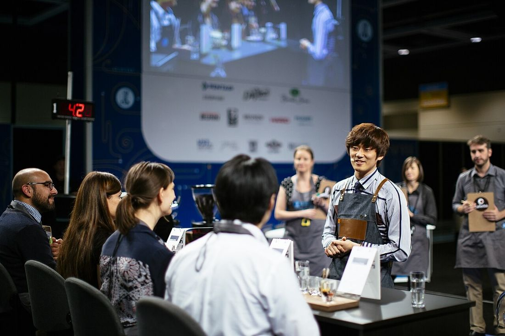
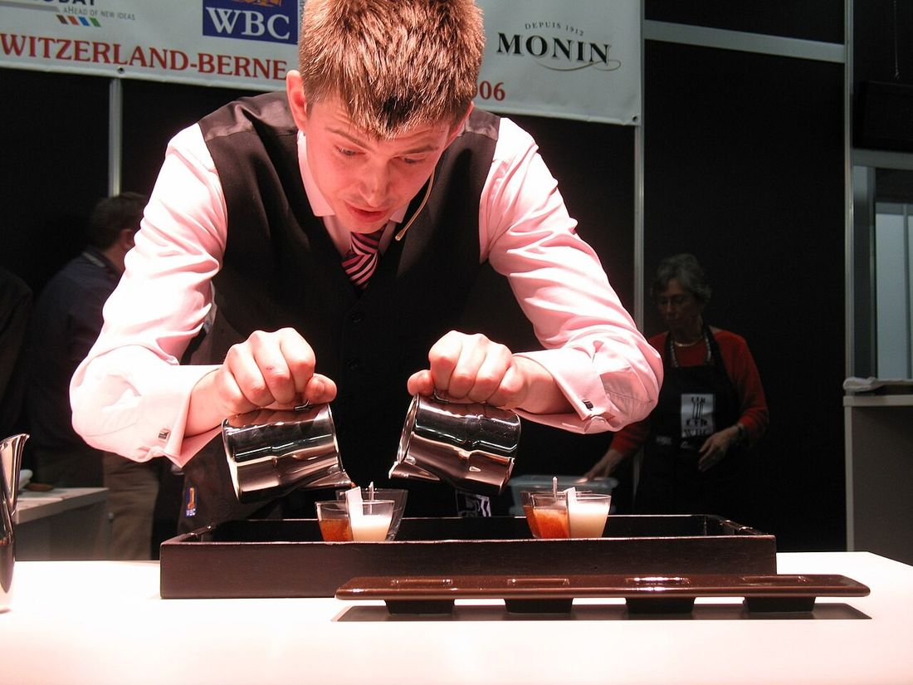
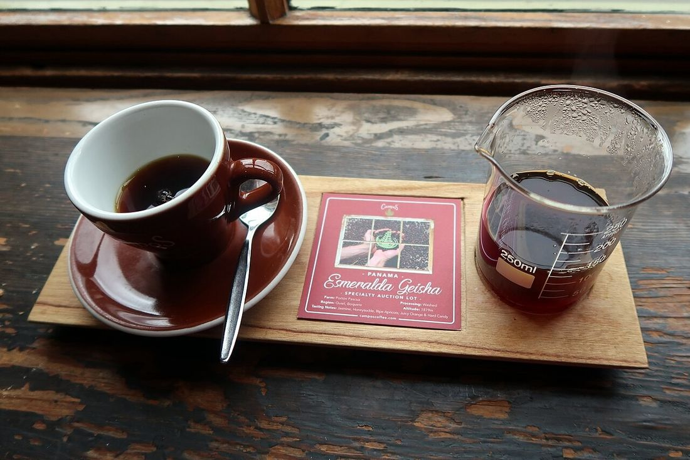
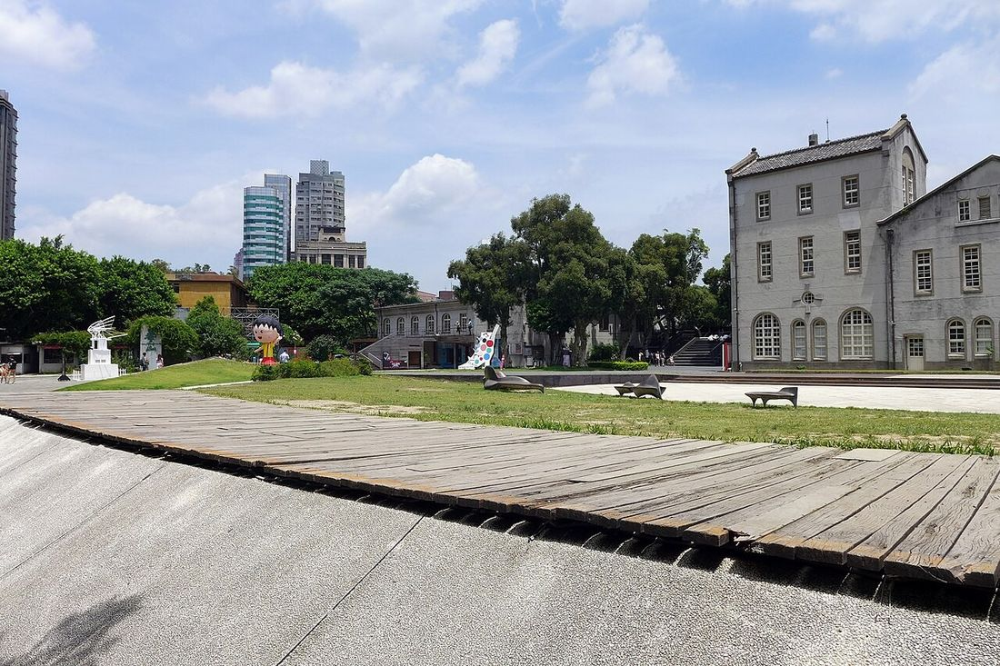

台北老店．大稻埕與城中
興波咖啡與吳則霖
二〇一六年六月，都柏林。61 位各國冠軍，只有一個人站上第一名：台灣的吳則霖。

這是台灣第一座世界咖啡師大賽冠軍，至今也是唯一一座。
工程師的咖啡路
吳則霖是電子工程背景，從二〇〇九年起年年參加台灣選拔。二〇一四、二〇一五兩年都站上世界賽，卻沒能奪冠。
他和太太從一台咖啡三輪車起家，後來開了興波咖啡。太太還去當了國際感官評審，把規則和評分摸透。
冠軍的那支豆子
決賽用的是巴拿馬水洗藝伎，烘豆師是另一位台灣冠軍：Fika Fika 的陳志煌（下一集講他）。
他還發現熱的沖煮把手會讓花香變鈍，就先用冰水把把手降溫。
專業點：世界賽怎麼比
・15 分鐘內，濃縮、奶咖、創意飲品各 4 杯
・他的濃縮：19 克粉 → 43 克咖啡液，約 1：2.3
・感官評審負責喝，技術評審看萃取時間和檯面清潔
・一邊做，一邊對評審解說
老照片與街景



店家資訊
- 店家
- 興波咖啡 Simple Kaffa 華山店
- 地點
- 台北市中正區忠孝東路二段27號
- 現況
- 營業中
- 營業時間
- 常有變動，出發前請再確認
- IG 影片
- 12/29 上片
你喝過興波嗎？最推哪一杯？留言告訴我。
到 IG 留言告訴我們
到 IG 留言告訴我們